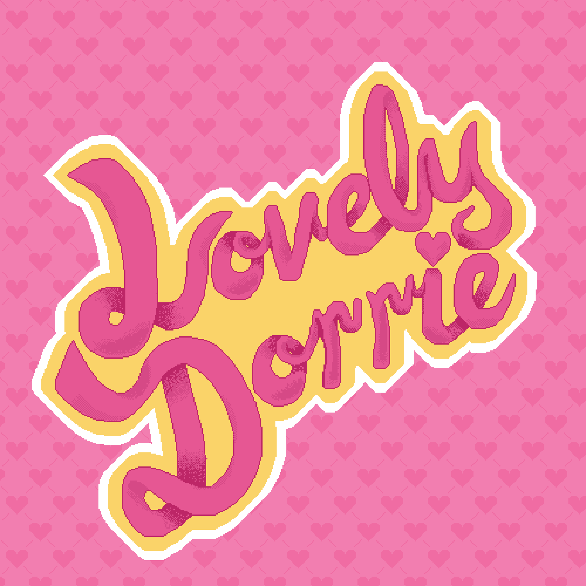
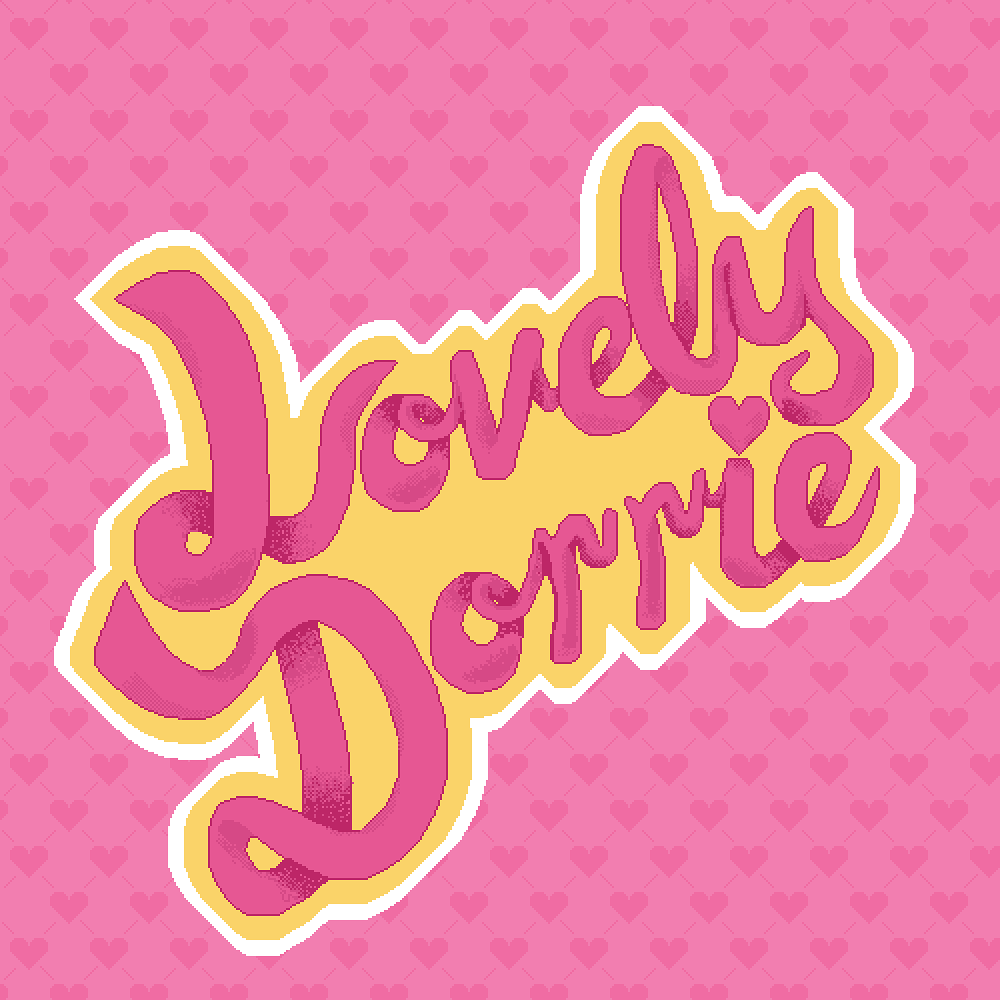

dorrie sacks aka LovelyDorrie is an amazingly talented eldrich digital being who is a writer (read da blog !), celebrity internet host on youtube anime talk show, and is a voice actor (she does audiobooks). she commissioned me to design her a new business card. i was inspired by magical girl anime like sailor moon and madoka magica, visuals novel games like doki doki literature club soft goth + lolita fashion, the backgrounds in earthbound, bullet hells, vaporwave, etc.
i decided to draw the entire card in pixel art using pixel (which ultimately corrupted my working files, so i can't give a hard rec). i've never done a whole pixel art piece, so it was a big learning experience. i learned about dithering, and next time i'd do some pattern toning instead of ummm random scribbles
the logo is inspired by shojou anime titles, street art tags, retro video game titles like megaman, and ribbon. and i animated it with a bounce inspired by a game loading screen
if you know magical girl anime, then you know theres a lot more under the surface than the cute outfits and sidekicks (i mean, madoka, tokyo mew mew, full moon wo sagashite, + many more, are just filled with tragedy). that's very dorrie, super cute and a little spooky. when i was designing her as a magical girl, i was keeping that in mind. i decided on a broken heart theme to reflect that good good taurus energy and also keep the lighter theme and pink palette. i also just had to include her kitties pepper and layla.
![business card front,Left top corner, rounded script logo reading 'LovelyDorrie' in pink with a yellow and white outline; Center, contact information in pixel font on dark pink box; Right, illustration of magical girl with a pink broken hearts theme. She has red curly hair, a pink doll dress, yellow ribbon accents with broken heart charms, and is holding a huge microphone. Two chibi cats are by her feet, a brown one to the left, and a grey and white one to the right. The background is a sky with clouds.](card/dorrie3.png)

 
